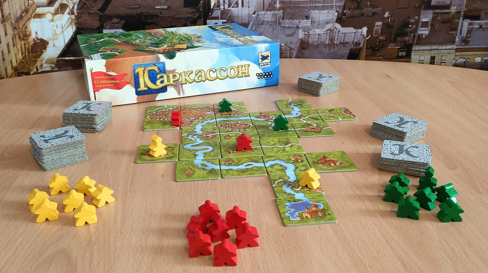

Carcassonne (Каркассон)
Тип: игра по выкладыванию тайлов, стратегия
Игроков: 2–5 человек
Время партии: 5–30 минут
Возраст: от 8 лет
Сложность: низкая (правила объясняются за 2–3 минуты)
Состав комплекта
В коробке находится всё необходимое для игры:
- 72 квадрата местности с изображениями городов, дорог, полей и монастырей;
- 40 фишек подданных (по 8 фишек пяти цветов: желтого, красного, зеленого, синего и черного);
- 1 дорожка подсчёта очков;
- правила игры;
- бонус: 12 квадратов с рекой и 5 фишек аббатов для дополнительных режимов.
Правила и механика
Цель игры — набрать наибольшее количество победных очков, создавая единое игровое поле из квадратов и размещая на них своих подданных.
- Выкладывание квадрата. В свой ход возьмите один квадрат местности и присоедините его к уже выложенным на столе. Новый квадрат должен продолжать существующий ландшафт — дорога смыкается с дорогой, городская стена — с другой стеной.
- Размещение подданного. После выкладывания квадрата вы можете (но не обязаны) поставить на него одну фишку подданного из своего резерва. При этом вы определяете её роль: разбойник (на дороге), рыцарь (в городе), монах (в монастыре) или крестьянин (на поле).
- Завершение объектов. Когда дорога, город или монастырь полностью достраиваются (замыкаются), владелец этого объекта забирает свою фишку обратно в резерв и получает победные очки.
- Финальный подсчёт. Крестьяне на полях остаются на своих местах до конца игры. Победа присуждается не в процессе, а только по результатам финального подсчёта очков.
Подсчёт очков
- Дорога: 1 очко за каждый квадрат, входящий в её состав.
- Город: 2 очка за каждый квадрат, плюс 2 очка за каждый щит в городе.
- Монастырь: 1 очко за сам монастырь и по 1 очку за каждый квадрат вокруг него (максимум 9 очков).
- Поля: Приносят очки только в конце игры за каждый завершенный город, который снабжается этим полем.
Конец игры
Игра заканчивается, когда заканчиваются все квадраты местности. После этого проводится финальный подсчёт очков, и побеждает игрок с наибольшим количеством очков.